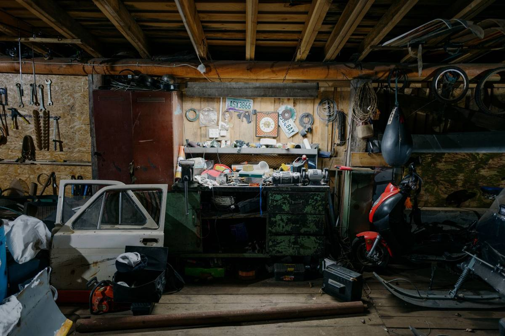

Every garage in Texas follows the same law of physics: the car lives in the driveway, and the garage stores everything else. Here is the four-pile method our crews watch work in hundreds of DFW garages, plus the disposal rules that trip everyone up.

Before you start: three ground rules
- Pick a cool morning. A DFW garage in July afternoon heat ends cleanouts early. Start at 8am or wait for fall.
- Set a finish line, not a vibe. "Both cars inside by Sunday night" beats "get organized" every time.
- Decide once, touch once. Everything you pick up goes directly into one of four piles. No "decide later" stack. That stack is how the garage got this way.
The four-pile method
Pile 1: Keep (and store properly)
Only things you have used in the last year, plus true keepsakes. Be honest about the exercise bike. If it survives the cut, it earns shelf or wall space, not floor space. Floor space is for cars.
Pile 2: Donate
Working tools, bikes, sports gear, intact furniture, unopened tile and paint from that project you finished differently. DFW donation centers want all of it. If it works and it is clean, it does not belong in a landfill.
Pile 3: Special disposal
This is the pile that stalls most cleanouts, so know the rules going in. Paint, motor oil, antifreeze, batteries, propane tanks, pesticides, and tires cannot go in regular trash in Texas. Most DFW cities run household hazardous waste centers or drop-off events that take them free or close to it. Dallas has the Home Chemical Collection Center, Plano runs household chemical collection, McKinney takes chemicals and e-waste year round through its household hazardous waste program, and the TCEQ guide for Texans covers everywhere else. Check your city's schedule before the weekend so this pile has a destination.
Pile 4: Go
Broken furniture, dead appliances, mystery boxes from two moves ago, the carpet scraps "for the dog house" you never built. This is the pile a junk removal crew makes disappear in an hour, including the lifting and the hauling. If the garage is part of a longer project rather than a one-day pile, dumpster rental vs junk removal covers which of the two actually fits.
Selling the house? Do the garage before the photographer comes, not before the first showing. What to clear before the listing photos has the room-by-room order.
The point-and-done option: plenty of our garage jobs skip the sorting weekend entirely. The homeowner walks the garage with the crew, points at what goes, and we handle sorting donatables out of the load. That is a garage cleanout start to finish, and a dead freezer in the corner goes out on the same trip under appliance removal. For what the day actually looks like, see how junk removal works in DFW.
None of the above covers the shelving, the overhead racks, or the workbench somebody built in place. Those come out differently, and the process is in garage shelving and workbench removal.
After the cleanout: keep it clear
- Go vertical. Wall rails for tools, ceiling racks for holiday bins. The floor stays car-only.
- One-in, one-out. New patio set arrives, old one leaves the same week, not "eventually."
- Book a yearly purge. One Saturday every spring keeps the four piles small forever.
One warning from experience: a garage cleanout that ends with a rented unit usually just moves the pile. If that already happened, clearing out a storage unit is the other half of the job. And if the second fridge or the old television in the corner is the thing you keep working around, appliance and electronics disposal covers the rules on those. The room most people do next is the one over their head, and an attic cleanout works differently enough to be worth reading before you go up the ladder.
Frequently asked questions
How long does a garage cleanout take?
One weekend morning to sort a two-car garage with the four-pile method, and one to two hours for a crew to haul the go pile.
What garage items cannot go in the trash in Texas?
Paint, motor oil, antifreeze, batteries, propane, pesticides, and tires. Your city's household hazardous waste program takes them, usually free.
Should I sort before the junk removal crew arrives?
It helps the load go faster, but it is optional. Pointing works too.
What garage items are worth donating?
Working tools, bikes, sports gear, intact furniture, and unopened home improvement supplies. If it works and is clean, donate first. If the overflow ended up in the side yard and an association noticed, HOA violation letters covers what has to physically leave.
Related reading: How junk removal works in DFW, so you know what to expect on the day, and where to donate the pile 2 items across the metroplex. If the garage is part of clearing a parent’s house, the estate cleanout checklist covers the whole job, and what we will and will not take answers the paint-can question. The backyard shed has its own version of this job in the shed cleanout.